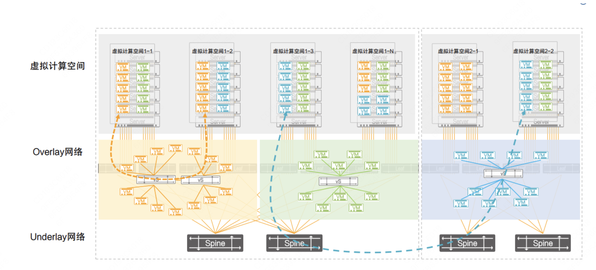
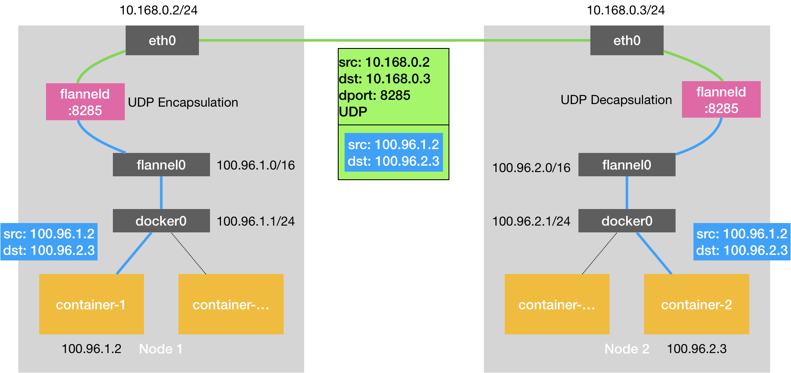
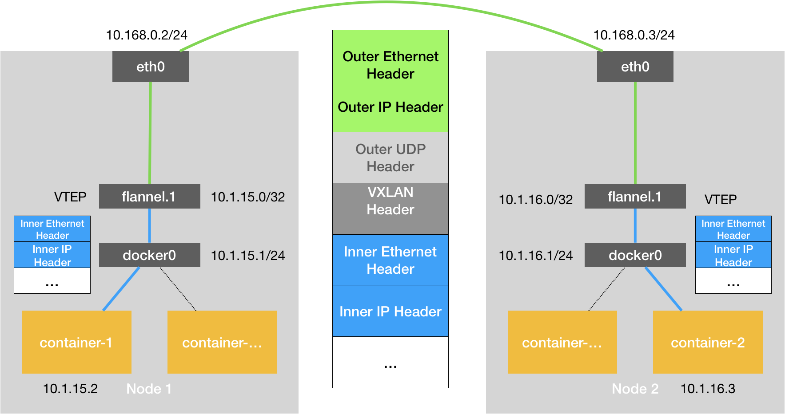
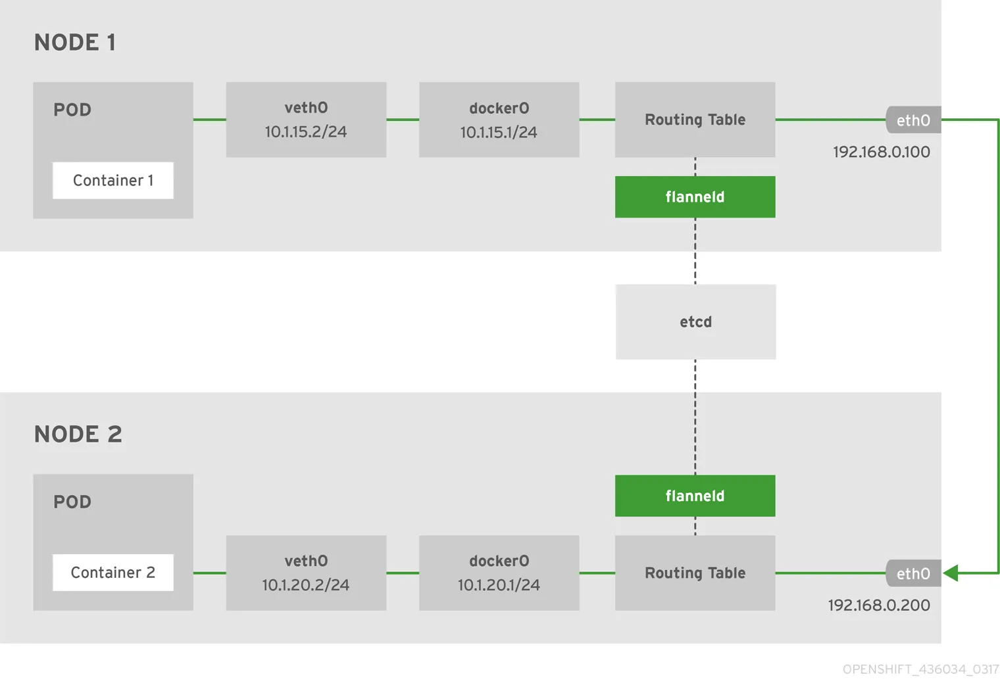
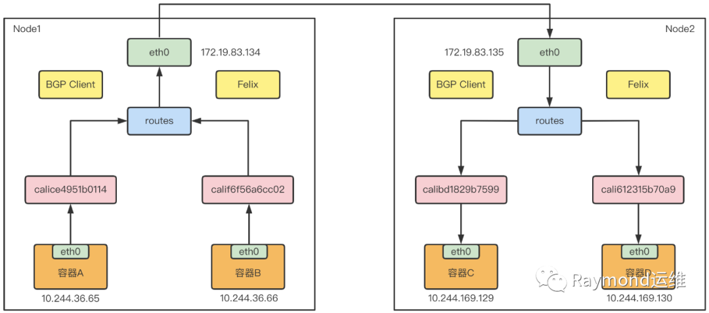
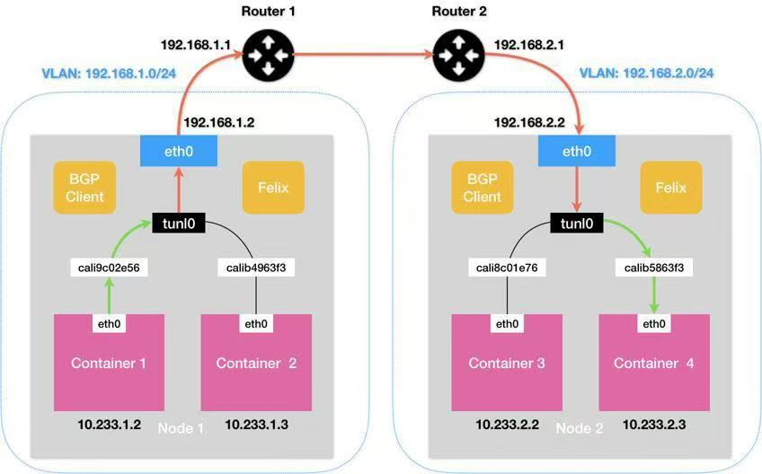
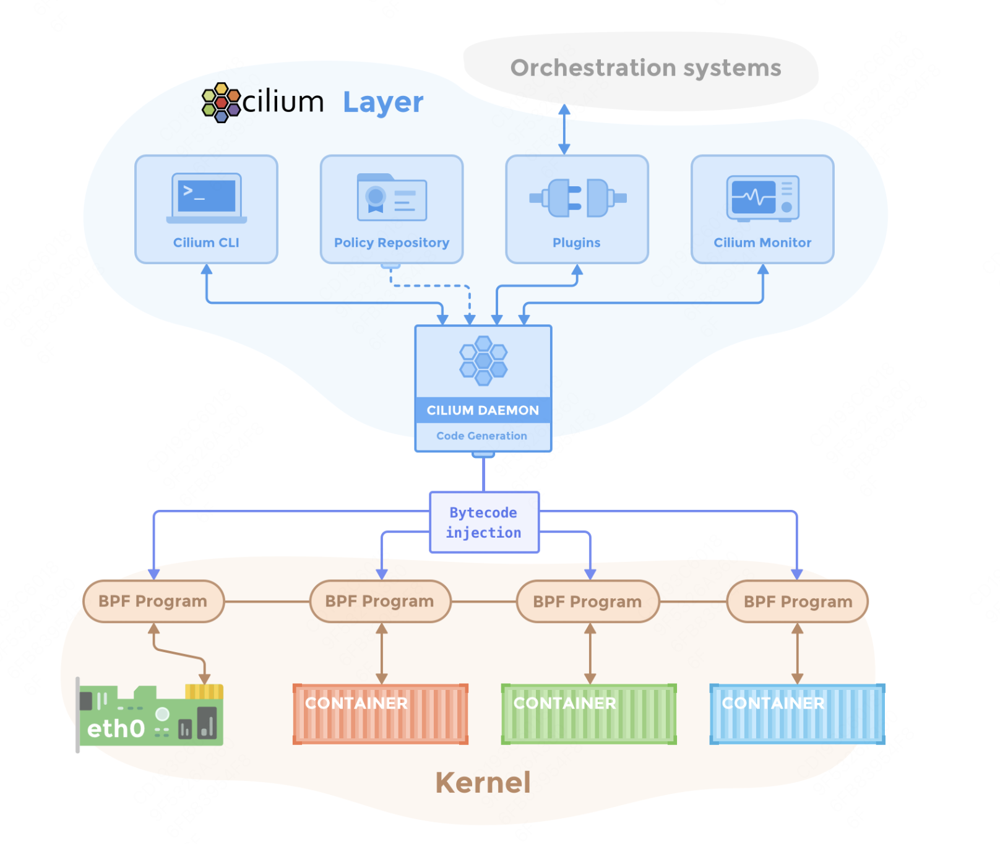
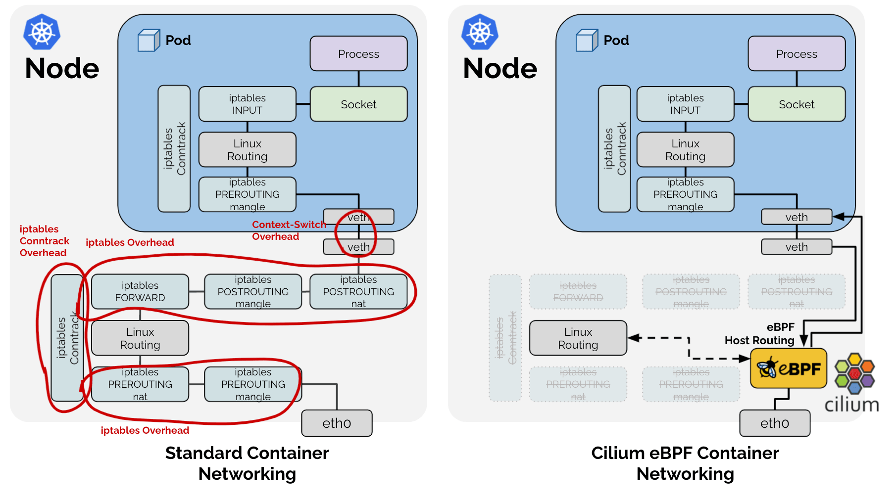

K8S 容器持网络#
!!!!!!!!! 1）注意 markdown 的格式，看我修改和提交的内容；2）看上去基本上是大模型生成的，尽可能用自己的语言和自己的理解去写内容，才有骨肉；3）成段落，不要用大模型的列表和总结展现形式，一定要自己深入核心技术，去挖掘自己以前不懂的东西。4）图很重要，图是理解的很重要一步，自己理解了，然后自己画图，这才是最重要最核心的内容。
要了解容器网络，首先要了解容器网络和传统物理机、虚拟机在架构设计和实现上的本质区别。
维度 |
容器网络 |
普通机器网络 |
|---|---|---|
网络实体 |
容器(Pod)作为基本单元 |
物理机/虚拟机作为基本单元 |
IP 分配 |
每个 Pod 有独立 IP(CNI 管理) |
每个物理机/虚拟机有独立 IP |
网络栈 |
共享主机内核网络栈 |
独立完整网络栈 |
通信模型 |
Overlay/BGP/eBPF 等虚拟网络 |
基于物理网络设备的路由 |
隔离机制 |
Linux 命名空间(netns)+cgroups |
VLAN/VXLAN/物理隔离 |
每个容器拥有独立的的 netns，通过 veth pair 连接主机网络。而普通机器游泳单一全局网络命名空间，直接使用物理网卡。
容器网络中的关键网络模型#
Overlay 网络#
提到 Overlay 网络，首先对比一下 Overlay 网络与 Underlay 网络的区别

Overlay 使用 Underlay 网络进行数据包进行数据传输，Overlay 通过在 Underlay 网络上部署虚拟化设备，实现对网络流量的控制和管理。
通过 Overlay 技术，可以在 Underlay 网络上构建多个逻辑网络，实现不同网络之间的隔离和灵活性，如虚拟专用网络、负载均衡等。
Overlay 网络多用于多租户云环境，Underlay 网络多用于高性能计算、传统企业网络。
BGP 路由#
使用边界网关协议交换路由，代表实现有 Calico 等。优点是高性能、无封装开销，需要网络设备支持 BGP。
eBPF 加速#
使用 Linux 内核 eBPF 技术，有如下特点：绕过 kube-proxy，高性能服务负载均衡，细粒度网络策略，比 iptables 快 5 倍+。
扁平网络 Flannel#
Flannel 部署在每个节点上，具备以下功能：
子网分配：为每个节点分配独立的子网段，确保 Pod IP 不冲突。
路由管理：动态维护跨节点的路由信息。
网络封装：支持多种后端实现（VXLAN、host-gw、UDP 等）
其核心组件包括：
维度 |
容器网络 |
|---|---|
flannelId |
主守护进程，负责子网分配、路由配置、后端驱动管理 |
CNI 插件 |
实现 Kubernetes CNI 接口，配置容器网络命名空间 |
后端模块 |
具体网络实现（VXLAN/host-gw/UDP） |
etcd/K8s API |
存储网络配置：集群 CIDR、节点子网映射等 |
UDP 模式#
作为最早支持的后端，核心是通过 TUN 设备 flannel0 实现。TUN 设备是工作在第三层的虚拟网络设备，用于在操作系统内核和用户应用程序之间传递 IP 包。
相比两台宿主机直接通信，多出了 flannelId 的处理过程，由于使用 TUN 设备，仅在发出 IP 包的过程就要经过三次用户态到内核态的数据拷贝，所以性能非常差。
以 flanel0 为例，操作系统将一个 IP 包发给 flanel0，flanel0 把 IP 包发给创建这个设备的应用程序：flanel 进程（内核态->用户态） 相反，flanel 进程向 flanel0 发送一个 IP 包，IP 包会出现在宿主机的网络栈中，然后根据宿主机的路由表进行下一步处理（用户态->内核态） 当 IP 包从容器经过 docker0 出现在宿主机，又根据路由表进入 flanel0 设备后，宿主机上的 flanneld 进程就会收到这个 IP 包

VXLAN 模式（默认 性能较好）#
VXLAN 是 Linux 本身支持的一种网络虚拟化技术，可以完全在内核态实现封装和解封装工作，从而通过“隧道”机制，构建 Overlay 网络。
VXLAN 的设计思想是在现有三层网络之上，构建一层虚拟的，由 VXLAN 模块维护的二层网络，使得连接在这个 VXLAN 二层网络上的主机，都可以像在同一个局域网里那样自由通信。
为了实现这个隧道，VXLAN 会在宿主机设置一个特俗的网络设备作为隧道的两端，叫做 VTEP，原理图如下：

flanel.1 设备，就是 VXLAN 的 VTEP，即有 IP 地址，也有 MAC 地址
与 UPD 模式类似，当 container-发出请求后，上的地址 10.1.16.3 的 IP 包，会先出现在 docker 网桥，再路由到本机的 flannel.1 设备进行处理（进站）
为了能够将“原始 IP 包”封装并发送到正常的主机，VXLAN 需要找到隧道的出口：上的宿主机的 VTEP 设备，这个设备信息，由宿主机的 flanneld 进程维护
host-gw 模式（高性能）#
host-gw 工作原理就是将每个 Flannel 子网下一跳设置成该子网对应的宿主机 IP 地址，即宿主机充当这条容器通信路径的网关。
所有子网和主机的信息，都保存在 Etcd 中，flannelId 只需要关注这些数据的变化，实时更新路由表。IP 包在封装成帧的时候，使用路由表下一跳设置上的 MAC 地址，就可以经过二层网络到达目的宿主机。
下图展示了使用 host-gw 后端实现的 Flannel 网络架构。

BCP 路由网络 Calico#
Calico 提供的解决方案与 host-gw 模式非常相似，其会在每台宿主机上添加一条路由规则，其中网关的 IP 地址，就是目标容器宿主机的 IP 地址。不同于 Flannel 使用 Etcd 维护路由信息的做法，Calico 使用 BGP 协议维护集群中的路由信息。
该方案是一个纯三层的方法，使用虚拟路由代替虚拟交换，每一台虚拟路由通过 BGP 协议传播可达信息到剩余数据中心。

Calico 的 CNI 插件会为每个容器设置一个 Veth Pair 设备，将其中一端放在宿主机上。于是容器发出的 IP 包就会经过 Veth Pair 设备出现在宿主机上，然后根据路由规则的下一跳 IP 地址，转发给正确的网关。
“下一跳”路由规则，由 Calico 的 Felix 进程维护，路由规则信息由 BIRD 组件使用 BGP 协议传输得到。
Calico 默认配置使用的是 Node-to-Node Mesh 模式，每台宿主机上的 BGP Client 都需要跟其他所有节点的 BGP Client 进行通信，以交换路由信息，因此该种模式只适用于少于 100 个节点的集群中。更大规模的集群需要使用 Route Reflector 模式。该种模式 Calico 会指定专门节点，用来负责跟所有节点建立 BGP 连接，学到全局的路由规则。
使用 BGP 模式也像 host-gw 模式一样，要求宿主机是二层联通的，如果不在同一个子网，就需要使用 IPIP 模式。
IPIP 模式#
在该模式下，Felix 会在 Node1 添加一条路由规则，如下所示：
10.233.2.0/24 via 192.168.2.2 tunl0
Calico 使用的 tunl0 设备是一个 IP 隧道设备，IP 包进入 IP 隧道设备之后，就会被 Linux 内核的 IPIP 驱动接管。IPIP 驱动会将这个 IP 包直接封装在一个宿主机网络的 IP 包中。这样 Node 2 的 IP 包，就被伪装成一个从 Node 1 到 Node 2 的 IP 包。
因此使用 IPIP 模式的时候，集群网络性能会因为额外的封包解包而下降。

基于 eBPF 的网络 Cilium#
Cilium 是一个开源的容器网络插件，基于 eBPF 实现高性能、可扩展的网络和安全工呢个。支持微服务间细粒度的流量控制，能够在 L3/L4/L7 层提供网络策略。

Cilium 的优势有哪些？
从下图可以看出，引入基于 eBPF 的 Host Routing 后，可以完全绕过 iptables 和网络协议栈，与常规的 veth 设备相比，实现了更快的网络命名空间切换。经过内核处理有如下弊端：
中断处理：频繁的切换中断会导致较高的性能开销，从而会产生时延。
内存拷贝：通过 DMA 将网络数据拷贝到内核缓冲区，再拷贝到用户控件，这个耗时占到了整个数据包处理流程的一半以上。
局部性失效：目前主流处理器都是多个 CPU 核心的，如果一个数据包的处理跨多个 CPU 核心，就可能造成缓存失效。

适用场景：
云原生微服务架构：需要严格进行流量控制、提供丰富的可观测性。
边缘计算：需要极低的延迟。
高流量集群：适用于对吞吐量、性能要求极高的生产集群。
多租户隔离：支持多租户网络环境的隔离需求。
Cluster-Pool 模式#
由 Cilium 自己管理 Pod IP 地址范围，可以在部署时指定 CIDR 范围。依赖 Cilium Operator 来管理 IP 地址池。有如下优势：
高灵活性：支持为不同节点或区域定义独立的 IP 地址池。
动态管理：可以动态调整 IP 地址池大小。
优化性能：减少对 K8S 控制器的依赖，提高网络性能和资源利用率。
主要适用于大规模集群，跨区域或多节点池的复杂网络，并且需要动态扩展 Pod IP 地址范围的集群。
Kubernetes 模式#
使用 K8S 自身的 IP 地址分配方式，从 Kubernetes 中获取分配给 Pod 的 IP 地址。兼容性比较强，适用于大多数 CNI 插件，但是不支持细粒度的 IP 地址池管理，无法为特定节点或区域分配特定的 IP 范围。
主要适用于中小型集群，网络规划比较简单，能够快速部署，与 K8S 兼容性比较强。
总结与思考#
!!!!!!!!!!!!!!
参考与引用#
https://www.cnblogs.com/chenqionghe/p/11718365.html
https://www.cnblogs.com/cheyunhua/p/17126430.html
https://www.cnblogs.com/evescn/p/18256900